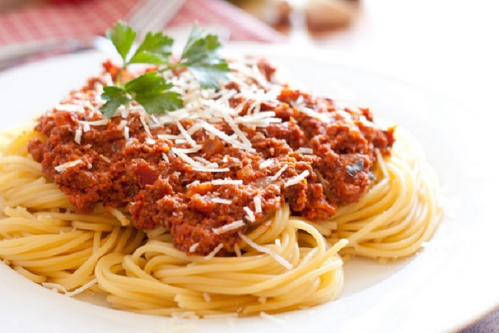
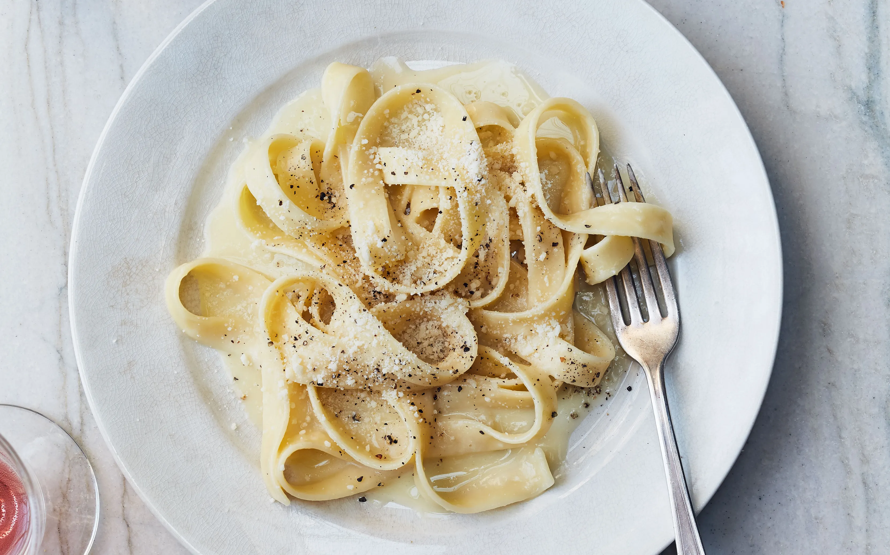
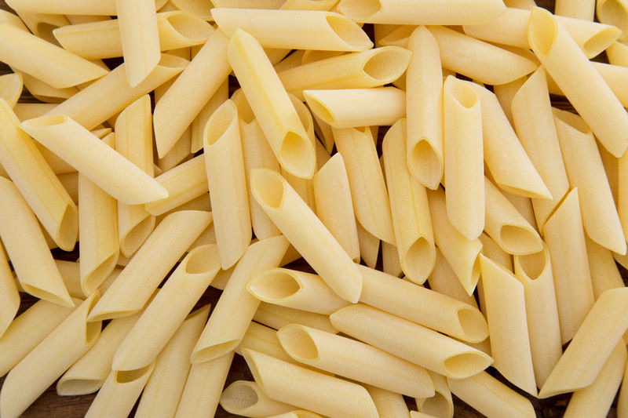
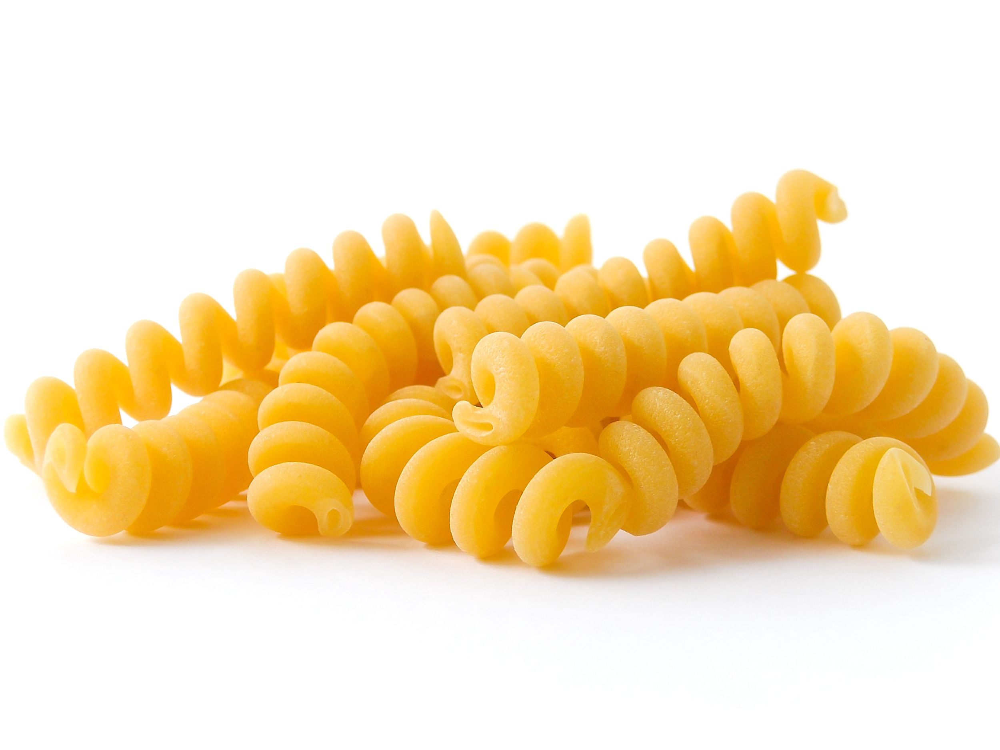
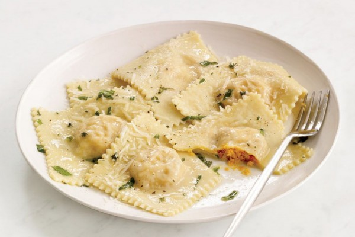
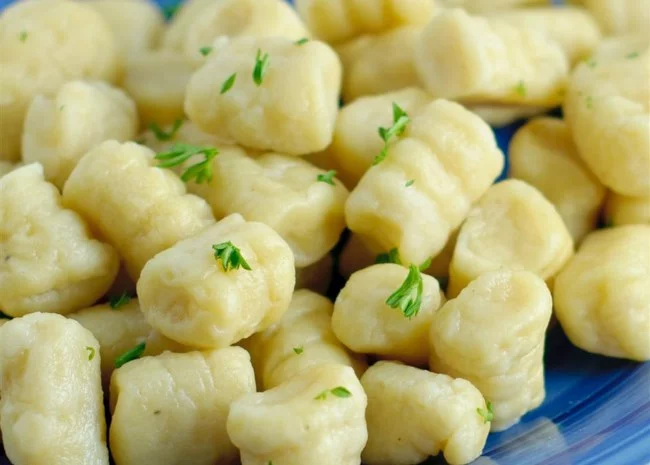
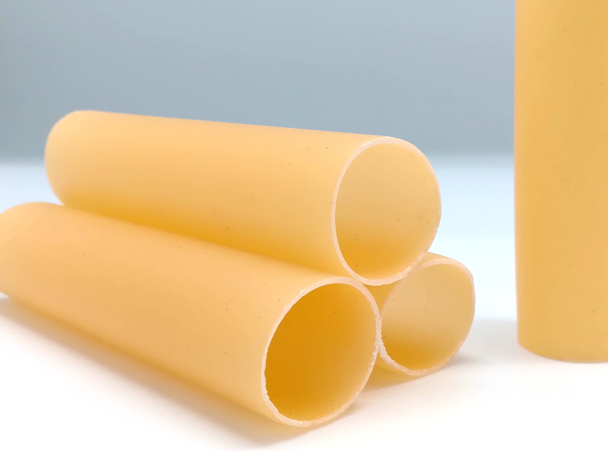
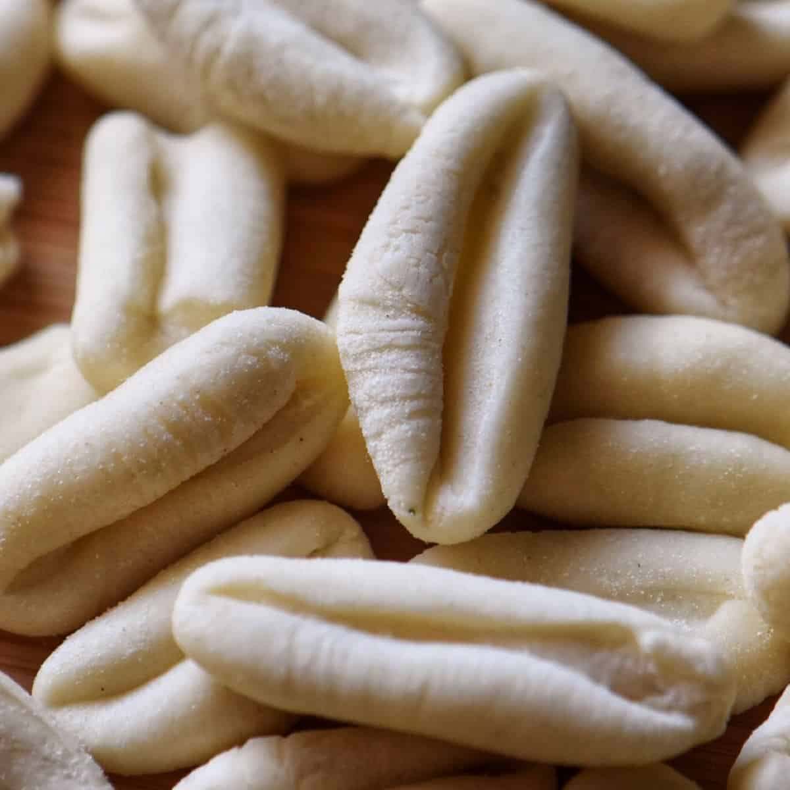
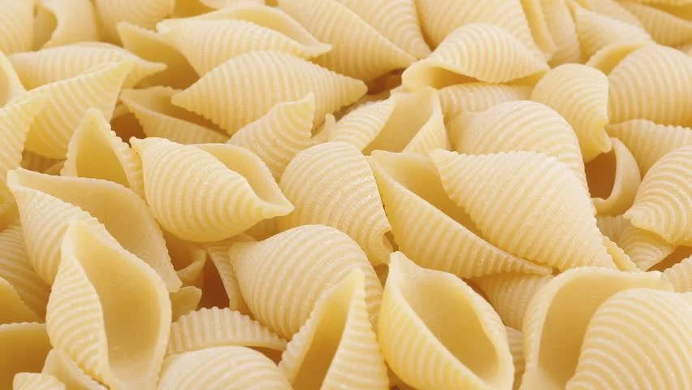

Apa itu pasta?
Pasta adalah makanan olahan yang digunakan pada masakan Italia, yang biasanya terbuat dari adonan tidak beragi berbahan tepung gandum durum (semolina) yang dicampur dengan air atau telur dan dibentuk menjadi lembaran-lembaran atau bentuk-bentuk yang beragam, yang kemudian dimasak dengan cara direbus atau dipanggang.
Mungkin yang paling familiar kita jumpai yaitu makaroni. Yup, makaroni termasuk jenis pasta yang sudah dikenal luas oleh masyarakat Indonesia.
Nah, di artikel ini disebutkan jenis-jenis pasta beserta gambarnya.
Selamat membaca
1. Spageti

Ini lho yang paling dikenal di Indonesia, spageti. Bentuknya mirip mi instan tapi dengan diameter yang lebih besar, paling sering dihidangkan dengan saus bolognese.
2. Fetucini

Fetucini dalam bahasa Italia berarti ‘pita kecil’ karena bentuknya mirip pita. Kalau di Indonesia sih lebih mirip kwetiau ya. Fetucini cocok dihidangkan bersama saus tomat dengan taburan daging atau carbonara.
3. Lasagna

Kalau lasagna, bentuknya lembaran tipis mirip keju slice yang disusun 7 lapis dan diberi isian daging, sayuran, seafood dan saus.
4. Makaroni

Makaroni, pasta yang bisa berbentuk lurus atau melengkung dengan lubang di bagian tengahnya. Biasanya dipanggang dengan keju atau dijadikan isian sup.
5. Penne

Hampir sama dengan makaroni, penne adalah jenis pasta berbentuk silinder yang ujungnya dipotong serong. Kamu bakal ingat salah satu snack renyah idola anak-anak deh.
6. Fusilli

Nah, kalau fusilli ini bentuknya pendek dan spiral. Biasanya dimakan dengan campuran sayuran atau salad.
7. Farfalle

Farfalle adalah jenis pasta yang disebut ‘kupu-kupu pasta’ karena bentuknya mirip kupu-kupu dengan ujung bergerigi. Pasta ini cocok disajikan dengan sayuran ataupun daging.
8. Ravioli

Italia juga punya pasta yang bentuknya mirip pastel ala Indonesia lho. Namanya ravioli. Isiannya bisa berupa keju, sayuran, daging atau seafood. Biasanya dimasak bersama saus ataupun kaldu.
9. Gnocchi

Sedangkan gnocchi merupakan jenis pasta berbentuk bulat lonjong berongga yang berbahan dasar kentang. Biasanya diolah dengan saus krim dan kacang polong.
10. Cannelloni

Cannelloni, pasta berukuran kecil seperti makaroni. Namun, bentuknya menyerupai pipa kecil. Biasanya disajikan dengan saus tomat kemudian dipanggang.
11. Vermicelli

Pasta tradisional Italia bernama vermicelli ini mirip dengan spageti, tapi ukurannya lebih kecil dan pendek. Pasta ini sering diolah bersama hidangan laut dan bisa juga dijadikan isian sup.
12. Cavatelli

Cavatelli umumnya merupakan pasta kerang kecil yang terlihat seperti miniatur roti hotdog. Cavatelli cocok disajikan dengan saus carbonara yang lebih creamy.
13. Conchiglie

Nah, kalau yang bentuknya mirip kulit kerang dengan tekstur yang bergaris-garis, namanya conchiglie. Ukurannya bervariasi mulai dari yang kecil hingga besar sesuai masakan yang akan dibuat.
Gimana Food Lovers, sudah cobain jenis pasta yang mana aja nih?